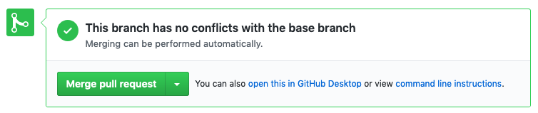
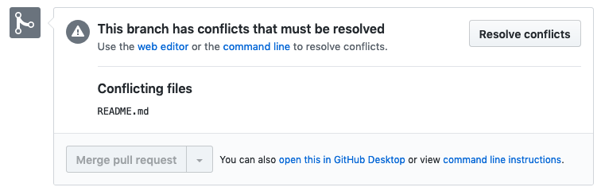
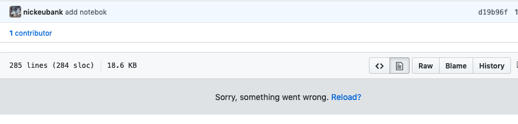
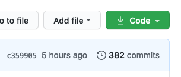
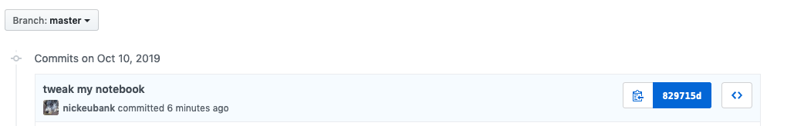
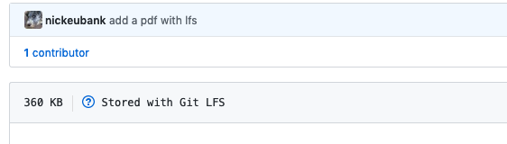

Git and Github, Part 2#
These exercises are a continuation of those in Git and Github Part 1. They will start where those left off.
Part 5: Dealing with Conflicts#
Congratulations! You’ve completed your first full github workflow cycle!
But truthfully, that was a very easy cycle. In reality, there are a few problems that often crop up, so let’s explore what those look like now.
The most common problem we face occurs when the repository you’re working on changes while you’re working on your separate branch in a way that causes conflicts.
To illustrate, consider the following situation:
You clone a repository, create a branch, and start making some edits to the code that correlates mortality and GDP per capita. For example, maybe you decide you want to use GDP per capita in current US dollars instead of constant 2010 US dollars.
While you are making these edits, someone else comes along and modifies the code that correlates mortality and GDP per capita too. For example, suppose they decide they want to use “Mortality rate, Under-5 (per 1,000 live births)” instead of “Mortality rate, infant (per 1,000 live births)”.
The other person’s code gets merged into the main branch while you’re still working on your code.
Now the main branch and the branch you are working on have “diverged.” That’s because changes to the main branch don’t get immediately applied to other branches, so the main branch now reflects changes that aren’t present on the branch you’ve been working on.
Now, if the specific lines of code that define what variables to use and what year to use are different lines of code, then when you go to merge your edits into the main branch (after your PR has been reviewed), then you won’t have any problems. Github considers each line of code to be a separate entity, and so it will only compare lines of code you’ve modified to those in the main branch, and will just apply only those changes when you merge your PR. So no conflict!
Indeed, this is what happened above – while you were working on your PR, the main branch you were working off changed when you directly edited your README file. But that didn’t cause a problem for git, because it could merge in your PR by just combining (a) the changes made to README since you created your branch, and (b) the changes you’ve made to your data analysis file since you created your branch to create a new commit on the main branch. Those changes were made to fully independent lines of code, so they didn’t conflict.
But if changes are applied to the main branch that affect the same lines of code being modified on a different branch, then you get a conflict. For example, if the lines of code that select the year to use are the same lines of code that selects the variables to keep, then github is stuck. It knows that since the creation of your new branch that same line of code was edited in both your file and in the main branch, and it doesn’t know which one is correct. If it uses your version of that line of code, then it would delete those changes to use 2015 instead of 2016; but if it uses the code on the main branch, your changes to what variables you use will be ignored.
So when it happens, github throws up its hands and says “sorry, this is above my paygrade. There’s a problem here I can’t solve, so I need you to do it manually”. And that’s what’s called a merge conflict.
So to get used to merge conflicts, let’s cause one! Note that both teams will have to do a bunch of steps in sequence to get this to work.
Creating a Merge Conflict#
Today, we will only be working with what, in yesterday’s exercises, was Computer A.
Exercise 0#
WHENEVER YOU SIT DOWN TO START WORKING ON A PROJECT FOR THE DAY AND ITS ON GITHUB, START BY DOING A GIT PULL! This ensures you’re up to date with any changes on the remote server before you start making more changes.
Exercise 1#
First make sure you pull the recent edits (so you have the merged PR in your main branch).
Exercise 2#
Create a new branch called “this_is_gonna_be_a_problem”.
Exercise 3#
In that branch, open the README.md and add to the title (the very first line of the readme) the year of data you’re using (“2016”).
Exercise 4#
Commit and push your edits, and create a new pull request. If you look at your pull request, you should see:

That’s because at the moment, since you created your branch, no other changes have been made to the main branch that might conflict with your edits, so if you wanted to merge right now, git would know that it should use your edits.
Exercise 5#
Now switch back to the main branch and edit the README.md title (the very first line) by adding the details of the GDP per capita variable (e.g. “Constant 2010 US$”).
Exercise 6#
Add, commit, and push those changes directly (no PR – we want to modify the main branch directly).
Exercise 7#
Now go back to your PR. You should see that because the main branch has now added edits to the line you also edited since you created your branch,, you can no longer just merge your edits! You’ll see:

Resolving a Merge Conflict#
Dealing with this situation requires several steps:
Pull from the repository (so that all the new edits to the main branch are stored in your main branch) with
git pullMake sure you’re currently on the branch
this_is_gonna_be_a_problemRun “git rebase main” (or “git rebase main” if your repo calls its primary branch “main”).
git rebase is a command to try and “move” the point from which your branch diverts from main by integrating all the changes that have happened since you first created your branch. It’s basically like merging your current branch with the (now updated) main branch, except that it does it in a way that re-organizes the branch history so it looks like all the changes you’ve made in your branch occurred after the most recent changes that have happened in the main branch. If you’re struggling with the idea of rebasing and want to learn more, I recommend this video.
Note it’s important that you’ve checked out your this_is_gonna_be_a_problem branch before you do this! git rebase main says to git “rebase the currently active branch off of main”. If the branch you have open is main, it will just announce that the rebase is done, since main is already up to date with… main (trivially!).
Visually, you can imagine it like:

Rebase can be useful for several things, not just conflicts. If you’ve been working on a branch for a while and you just want to bring all the features and updates from main into that branch, rebase pulls all those in.
But in this case, rebase will try and integrate your branch with the main branch, and in doing so will give you a chance to address all the conflicts that have appeared (in this case, both you and your teammates editing the first line of the README.md at the same time).
When you try and rebase, you should get a message that looks something like this:
First, rewinding head to replay your work on top of it...
Applying: modify readme
Using index info to reconstruct a base tree...
M README.md
Falling back to patching base and 3-way merge...
Auto-merging README.md
CONFLICT (content): Merge conflict in README.md
error: Failed to merge in the changes.
Patch failed at 0001 modify readme
hint: Use 'git am --show-current-patch' to see the failed patch
Resolve all conflicts manually, mark them as resolved with
"git add/rm <conflicted_files>", then run "git rebase --continue".
You can instead skip this commit: run "git rebase --skip".
To abort and get back to the state before "git rebase", run "git rebase --abort".
As this error message helpfully points out (CONFLICT (content): Merge conflict in README.md) you have a merge conflict in README.md. So let’s open the README.md file and see what’s going on.
What you will see is that git has very kindly flagged the conflict it found, and provided you with both the version you wrote, and the version that it found in the main branch. It should look something like:
<<<<<<< HEAD
[whatever text is in the main branch]
=======
[whatever text you created]
>>>>>>> the_name_of_your_commit
Think of these new lines as “conflict dividers”. The ======= line is the “center” of the conflict. All the content between the center and the <<<<<<< HEAD line is content that exists in the current branch main which the HEAD ref is pointing to. Alternatively all content between the center and >>>>>>> new_branch_to_merge_later is content that is present in our merging branch.
Your job is now to resolve this conflict by editing this text. You can keep the stuff on main, keep your edits, or write something new entirely. So just edit this block to your liking.
(In this case, we want both things in the title, so you should probably write a new title with both additions).
Once you’ve made those edits, then (as suggested in your error message) you should:
Resolve all conflicts manually, mark them as resolved with
"git add/rm <conflicted_files>", then run "git rebase --continue".
You can instead skip this commit: run "git rebase --skip".
To abort and get back to the state before "git rebase", run "git rebase --abort".
Once done, you’ll then have to push your changes. Note that just running push won’t work!. That’s because rebasing fundamentally changes the content of the PR in a non-reversable way, and git always gets nervous when you try and make non-reversable changes. So to push you have to use git push --force. This is a protection to ensure you recognize you’re making a permanent edit.
Exercise 8#
Now that you’ve pushed your README with conflicts resolved, go back to your PR. If you did everything right, you should now be able to merge your edits!
A Note on Jupyter Notebooks#
Github is both great and terrible when it comes to Jupyter Notebooks.
Exercise 9#
To understand why, let’s begin by having everyone add and push a Jupyter Notebook to their repository. Once you’ve pushed your files, navigate to the notebook on github in your browser.
The first thing you’ll likely see is… nothing:

The reason is that github has service that renders jupyter notebooks to look like, well… jupyter notebooks. And when you push a jupyter notebook, that notebook gets put into a queue for rendering, and it will thus only be visible as a rendered document when it gets to the front and gets rendered. This can take a while, so we’ll just move on. But if you want to see what github looks like when presented a rendered notebook, you can find this page as a github-rendered notebook here!.
This happens because the pretty version of the jupyter notebook you know and love is a rendered interface. If you want to see what a jupyter notebook looks like behind the scenes, click the raw button on the notebooks github page. That is actually everything that is in a jupyter notebook – a plaintext file in JSON formatting.
This is important to understand, because it also impacts how git manages changes to jupyter notebooks.
Exercise 9#
To illustrate, open the jupyter notebook you added to your repository and make some changes – add some text in one cell, and maybe add a new cell. Then commit and push those changes.
Exercise 10#
In github, you can always easily see what has changed in a commit by clicking on the “Commits” button:

then clicking on the hash number next to a given commit (the hash number is what uniquely identifies a commit). So in my repo, I’d click on the 829715d button:

That will bring you to a page that shows you a side-by-side comparison of what was in the repo before this commit, and what changed in this commit with nice coloring.
The problem, as you can see though, is that git interacts with jupyter notebooks at the level of those plaintext JSON formats, making diffs hard to understand.
It is for this reason that jupyter notebooks, while amazing for many things, and while fine to put into github repositories to share and host, are not great for collaborative analysis, because these diffs are just very hard to read.
.gitignore#
This brings up another important issue for github users: the .gitignore file!
Sometimes when your working, your program will create “helper files” in your repository that you don’t want to keep. R, for example, makes .RHistory files, and jupyter notebooks (as you can see now!) makes .ipynb_checkpoints/ files.
The .gitignore file is a way of telling git that there are certain files you just don’t want in your repo. As the name implies, these can be ignored.
Because your .gitignore file starts with a period, it will be invisible if you aren’t using a command line tool (or a program like Atom), so to modify it you need to go to the command line and run open .gitignore while in the root directory of your git repository.
Exercise 11#
From the command line, navigate to your repository root folder and run ls -la. There you should see all your normal files and a folder called .git.
The .git folder basically is what makes this folder a github repository. It stores the entire history of this repository, as well as information about what github repository it should talk to when you run push and pull.
In that folder, you may see a .gitignore file as well, but you might not. If you do not, create one now (options: atom .gitignore will create a blank file called .gitignore and open it in atom; nano .gitignore will open a blank file called .gitignore in nano, etc.).
In that file, add (as a single line in the file): .ipynb_checkpoints/*.
This says “Ignore anything in the folder .ipynb_checkpoints in the root directory”.
From this point forward, github will ignore these files. However, note that you probably already added ipynb_checkpoint files to your repo when you first used your notebook in this repo. So to remove what’s there, you have to run: git rm [the file]. Note you may also have to use the --force option.
Exercise 12#
Now to make sure it has worked, go make more edits to your notebook so that .ipynb_checkpoints will be updated. Then check git status. You should see the edits to your notebook, but you shouldn’t see git report any changes to .ipynb_checkpoints/ files.
Git LFS#
The last thing we’ll do is play a little with Git-LFS.
As you read, Git-LFS allows you to store binary files on a server with much more storage than is available for your primary github repository. Moreover, it helps avoid the “exploding files” problem: if you just put a binary file in your repository, then every time you change that file and make a commit, another full version of that file is added to your git history, and that version stays with the repository. If you have a 100mb file, and modify it through 100 commits (not uncommon), then anyone who wanted to clone your repository would have to download every one of those 100 version, meaning they’d have to clone a 10gb file.
By contrast, with git-lfs, only a little pointer is added to the repository itself, and only the most recent version of the actual binary file is made available to the user. You can always recover old versions of data, but they don’t actually live in your repo.
Exercise 13#
To use git-lfs, go to your repo and run the command git lfs track "*.pdf" (this says all PDFs should be stored via git-lfs). That will create a .gitattributes file that contains all the info about what should be managed using git-lfs.
To see, after running the git lfs track "*.pdf" command, open up the .gitattributes file to see what it looks like.
Exercise 14#
Now, put a PDF in your repository, commit it and push it to github. If you then look at it on github, you should see:
.
Yay!!!
A few notes about git-lfs:
If someone without git-lfs tries to clone a repo using git-lfs, instead of the actual files they want, they’ll just see a small text file with a long series of numbers. That’s the pointer to the actual data. If this happens to you, your computer doesn’t have git-lfs installed.
If you get an error when you try and run
git lfs track, you may not have git-lfs installed. You can install it here.Git-lfs allows you to have much more space than putting binaries in your repo, but it isn’t unlimited or free. If you go to
Settingsfor your github account, and look atBilling, you will see a “Git LFS Data” quota. So don’t just go crazy. Compressed data files (e.g. HDF5 with compression) are your friend!LFS quotas accounting is based on the owner of the repository being used. If you push data (using LFS) to a repository owned by, say, me (nickeubank), then that data comes out of my quota, not yours.